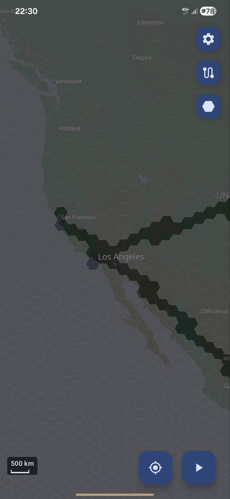
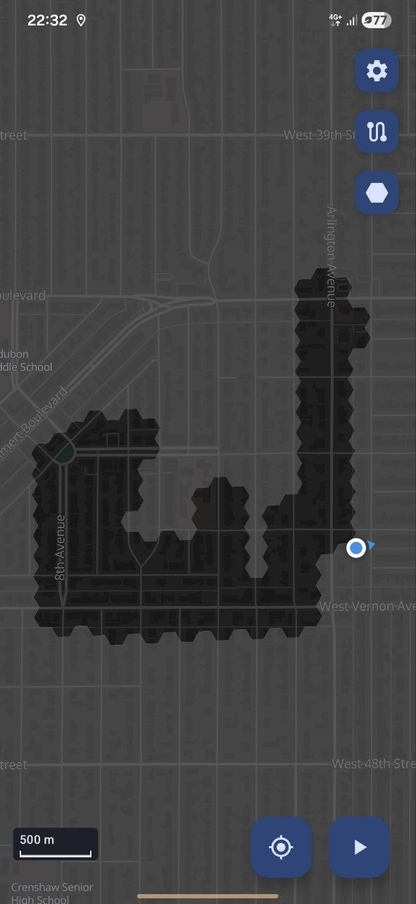
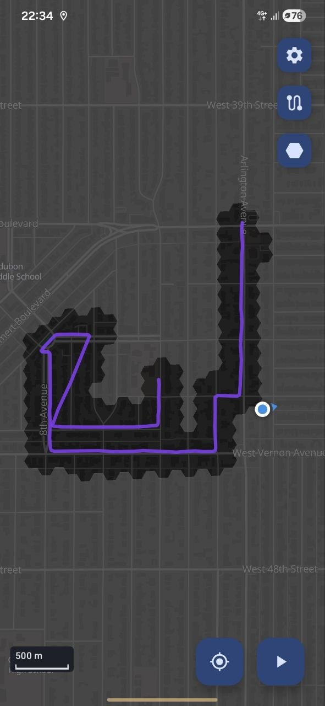
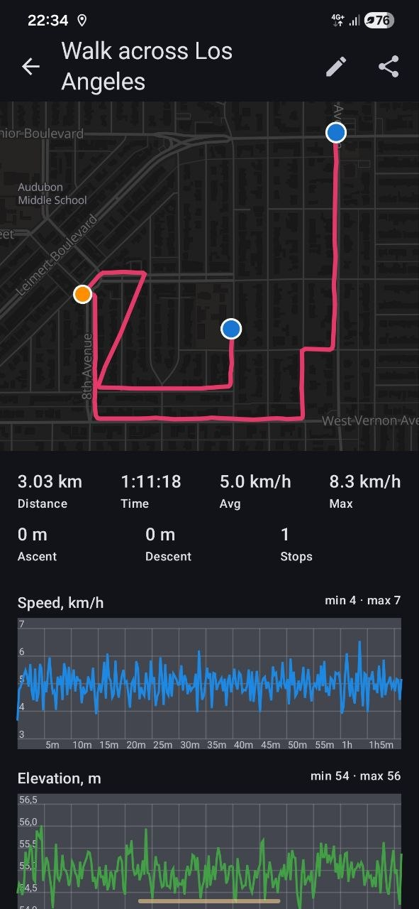
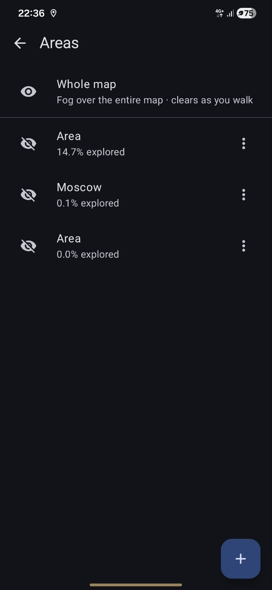
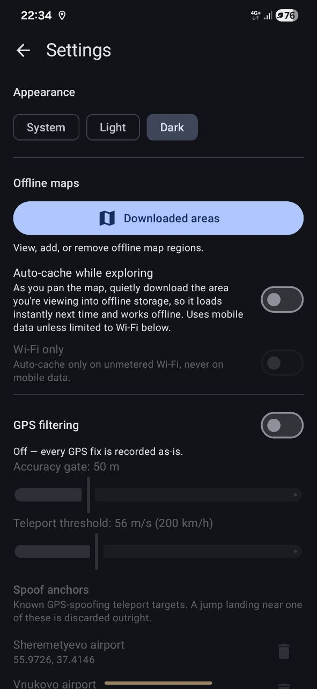
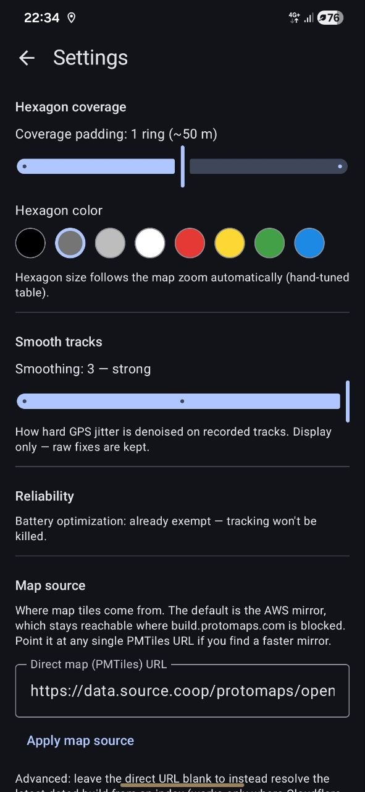

An Android map application that keeps a record of where you have actually walked. Draw an area and it fills with hexagons that clear as you physically pass through them. Supports track recording, GPX import and export, and Google Timeline import.
Draw an area anywhere on the map and it fills with grey hexagons. They clear wherever you physically walk, so the map opens up only where you have actually been. You can redraw or delete an area later without losing the ground you have already covered.
Record a route and get its distance, moving time, speed, ascent and stops, with a speed-coloured line on the map and elevation/speed charts for every walk.
Download any region as a single file and the map keeps working fully offline, which helps where tiles are slow or blocked. When online it streams fast map tiles instantly, then falls back to the downloaded maps the moment the signal drops. The first 4 zoom levels of the world map are built in.
A configurable filter chain rejects fake, mocked, and physically impossible position fixes, so distance, routes, and coverage stay accurate even in areas with heavy GPS spoofing.
Import tracks from other apps or export them as GPX, and save everything (tracks,
areas, coverage, settings) to a single backup file.
Import accepts GPX and Google Timeline JSON, and short tracks can be filtered
out after import.
Switch between light and dark themes, pick the hexagon colour, adjust how much each step clears and how strictly fixes are filtered, and choose the online and offline map sources: a preset or your own tile URL.







Map data © OpenStreetMap contributors, basemap by Protomaps